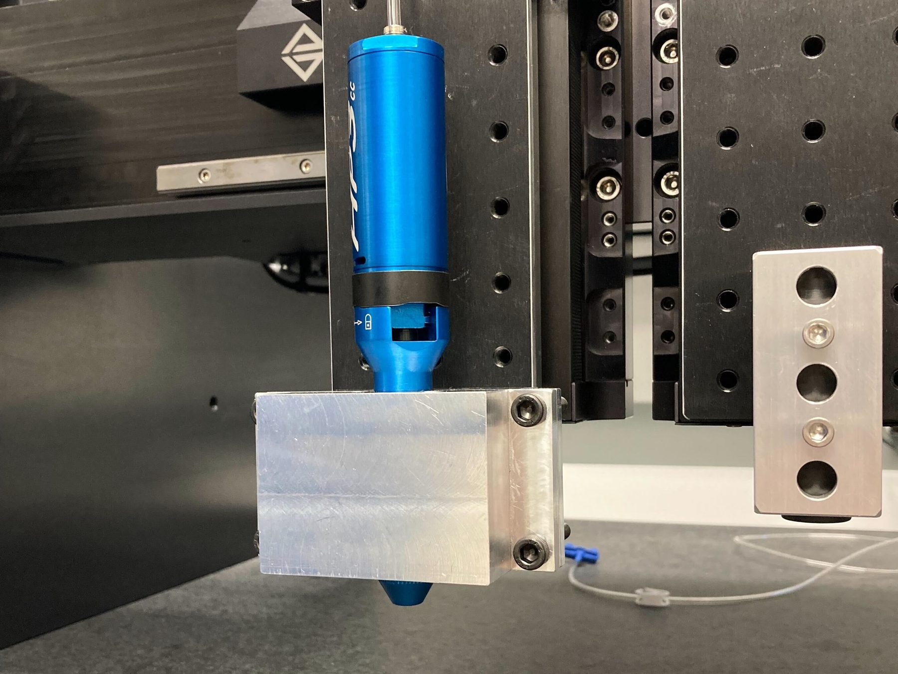

Robotic Matter Lab · Sep 2022 – Dec 2022
Heated Nozzle Enclosure
A heater block for a gantry-mounted nozzle that allows the 3D printing of a specialized visco-elastic material.

Overview
The heated nozzle enclosure I developed for the Robotic Matter Lab was designed to heat a specialized viscous material to 90 °C before it was extruded through a nozzle. The system was mounted on a gantry so the material could be 3D printed. Temperature was regulated by a PID controller connected to two heater cartridges in parallel and an RTD probe. The enclosure was machined out of aluminum using a mill and a CNC, and all of the wiring was done by hand.
Development
When I joined the Robotic Matter Lab, I was given the project of developing a heated nozzle system to 3D print specialized materials developed by the lab. The nozzle itself was already chosen; my job was to develop an enclosure that would bring it to a set temperature. We decided to make the enclosure out of aluminum, since it is easy to machine and conducts heat well.
We started with a CAD model that we would first 3D print to confirm fits and later machine. The model was simple: two halves that clamp together with the nozzle cavity in the middle. We didn't want to add anything too complex since we would have to machine it out of metal, and a heater block doesn't need special geometry. From my experience fitting parts together, I knew that making the nozzle cavity an exact cutout of the nozzle would not fit, so I added clearance between the two. I printed prototypes with 0, 0.2, and 0.4 mm of XY clearance; after testing, 0.2 mm fit the nozzle best.
Once we had a prototype we were satisfied with, we machined the part out of aluminum. The PhD student I was working with machined the housing, and I used a CNC to machine the nozzle cavity.